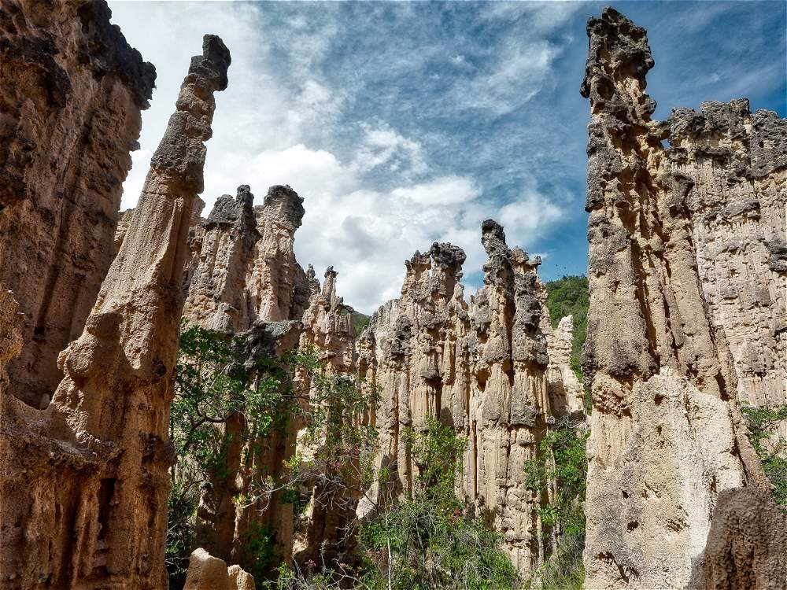

Geografía Lingüística de Santander, Norte de Santander y la Provincia de Ocaña. Del ustedeo absoluto y la firmeza consonántica andina al puente lingüístico andino-caribeño.
Eje orográfico e histórico que moldeó el aislamiento colonial y la cohesión consonántica del español andino-oriental.
Atlas · Viaje cartográfico
Del globo al Gran Santander
Acércate desde el planeta hasta los dos Santanderes y ubica dónde se habla cada una de las cinco variedades.
No se pudo cargar el mapa (revisa la conexión a internet). El resto de la página funciona normal.
Límites: DANE, Marco Geoestadístico Nacional 2018 · Natural Earth. Ubicaciones aproximadas de las cabeceras.
Fundamentación Geolingüística
Marco Geohistórico y Clasificación Dialectal
La orografía de la cordillera Oriental, el curso del río Magdalena y las rutas comerciales coloniales dieron origen a cinco subzonas lingüísticas claramente delimitadas.
Hitos de Formación Lingüística en el Oriente Colombiano
1539
Fundación de Vélez
Punto inicial de entrada hispánica a la cordillera oriental.
1549
Pamplona Colonial
Foco fundador andino de expansión hacia el nororiente y Venezuela.
1570
Fundación de Ocaña
Orientación comercial al río Magdalena, Mompox, Cesar y Maracaibo.
1683
El Socorro
Desarrollo artesanal y comercial que afianzó el ustedeo andino.
1857
Estado Soberano
Consolidación de la identidad sociocultural del Gran Santander.
1982
Montes Giraldo (ICC)
Delimitación cartográfica del superdialecto andino vs. franja costeña.
Cartografía y Geografía Lingüística
Las 5 Subzonas Dialectales del Gran Santander
Explora el mapa geográfico detallado de Santander y Norte de Santander. Haz clic en los nodos de los círculos pulsantes o en las pestañas para sincronizar la ilustración regional y la información académica.
Mapa Cartográfico Dialectal
Pulsa cualquier nodo numerado (1–5) Línea discontinua: Isoglosa /-s/
Sociolingüística y Cortesía
Fórmulas de Tratamiento y Vocativos de Identidad
En el Gran Santander coexisten cuatro regímenes pronominales distintos según la subregión, la historia colonial y el grado de confianza.
Vocativos y Apelativos de Confianza
Haz clic sobre cada vocativo para conocer su origen, subzona y valor pragmático.
10 marcadores interactivos
Enclave Lingüístico Excepcional
El Voseo Histórico de Ocaña
A diferencia del interior de Santander, la Provincia de Ocaña conserva un voseo arcaizante y recesivo (documentado en el ALEC y por Montes Giraldo). Funciona como un auténtico puente entre los Andes y el Caribe.
Ruta Colonial
Conexión fluvial con Mompox, Gamarra y el río Magdalena.
Área Lateral
Aislamiento cordillerano (norma de Bartoli) que preservó el vos.
Continuo Zulia
Proximidad histórica con el sur del Cesar y la cuenca de Maracaibo.
Formas Imperativas Monoptongadas
¡Vení! · ¡Mirá! · ¡Decime! · ¡Sentate!
Vigente en áreas rurales

Provincia de Ocaña
La Playa de Belén & Los Estoraques
Municipios voseantes: Ábrego, La Playa, Convención, Teorama, Río de Oro y González (Cesar).
Estructura Fónica y Gramatical
Laboratorio Fonético y Morfología Regional
Contrasta la firmeza consonántica de la cordillera frente a la aspiración caribeña de la /-s/ en Ocaña, junto con los rasgos morfosintácticos compartidos.
Isoglosa de la /-s/ Implosiva y Prosodia
Selecciona un perfil acústico para comparar su realización fonética.
Atenuación afectiva o de cortesía pragmática cuando la raíz termina en -t o -d.
ahoritica · momentico · quietico
Aumentativos enfáticos
Sufijación expresiva con -azo, -ón y -ote para ponderar fenómenos o estados.
solazo · calorón · sustote
Apócopes frecuentes
Acortamientos sistemáticos en la oralidad cotidiana y vocativos familiares.
mano · pa' · onde · om'be
Pretérito simple
Preferencia por el pretérito indefinido sobre el compuesto para acciones recientes.
«¿Ya desayunó?»
Laboratorio fonético
1 · Líneas de entonación (semitonos)
Elige una muestra para ver su línea de entonación.
Analizando la voz…
2 · Análisis fonético (espectrograma; toca una palabra o un segmento)
3 · Aparato fonador
4 · Transcripción (AFI)
Toca un símbolo para ver su lugar y modo de articulación.
Más datos del análisis
Trapecio vocálico (vocales medidas)
¿Cómo leer la línea de entonación?
Subidas y bajadas grandes y rápidas indican una melodía marcada; una línea más plana, una melodía más suave. Fíjate en el final de cada frase: si sube y luego cae, es una curva circunfleja.
Análisis acústico automático y aproximado (FFT, LPC y YIN en el navegador; el audio no sale de tu equipo). El aparato fonador es un esquema a partir de la transcripción, no la boca real de quien habla. En español de Colombia hay seseo: la z y la c suenan [s], así que la [θ] de España no aparece; la interdental que sí aparece es la aproximante [ð] de cada o todo.
Diccionario Regional Filtrable
Atlas Léxico, Gastronómico y Expresivo
Filtra y busca términos emblemáticos por subregión o categoría gramatical y cultural.
Clase de palabra:m. = masculino · f. = femenino
Muestras Reales en Contexto
Corpus Comparativo y Laboratorio Audiovisual
Compara cómo se realiza la misma escena (saludo del mediodía y queja por el calor) en cuatro subzonas y escucha a hablantes reales en video.
Resaltar marcadores:
Reproductor audiovisual
Síntesis del recorrido
Conclusiones
Lo que nos deja el recorrido por las voces del oriente colombiano.
1
La geografía también habla
La cordillera Oriental, el río Magdalena y la frontera con Venezuela no solo separan territorios: explican por qué en dos departamentos conviven cinco subzonas dialectales. El aislamiento de la montaña conservó formas antiguas, como el voseo de Ocaña, mientras que el río y la frontera abrieron la puerta a rasgos caribeños y venezolanos.
Lo vimos en
2
Cuatro maneras de tratar al otro
El Gran Santander no tiene un solo sistema de tratamiento sino cuatro: el ustedeo de solidaridad del interior, el sumercé del sur, el tuteo fronterizo de Cúcuta y el sistema vos / tú / usted de Ocaña. En Santander, «usted» no marca distancia sino cercanía, algo que suele confundir a quienes vienen de fuera.
Lo vimos en
3
La /-s/ traza la frontera entre los Andes y el Caribe
La isoglosa de la /-s/ final de sílaba resume la división del territorio: en el interior y la frontera se pronuncia plena [s], mientras que en Ocaña y el Magdalena Medio tiende a aspirarse [h] o a perderse. Las muestras reales del laboratorio muestran esa tendencia, pero también matices: en el habla rápida o con ruido, la frontera no es tan nítida como en los mapas.
Lo vimos en
4
Rasgos que unen a toda la región
Por encima de las diferencias, hay rasgos compartidos que dan unidad al oriente colombiano: la pérdida de la /-d-/ entre vocales (pisa'o, pobla'os, cansao), los diminutivos en -ico (ahoritica, momentico), los aumentativos expresivos (solazo, calorón) y la preferencia por el pretérito simple («¿Ya desayunó?»).
Lo vimos en
5
La melodía también es identidad
El famoso «hablar golpeado» santandereano tiene una base acústica: una entonación de subidas y bajadas marcadas y un ataque consonántico fuerte. En nuestras muestras, Bucaramanga y Ocaña presentan rangos melódicos amplios (de unos 8 a 9 semitonos), y en Ocaña aparece un final de frase circunflejo, que sube y luego cae.
Lo vimos en
6
El léxico es un puente
El vocabulario confirma el carácter de bisagra de la región: en Ocaña conviven voces andinas y costeñas (chuspa y guineo), en Cúcuta entran palabras venezolanas como chamo, y la cocina (bocadillo veleño, hormiga culona, arepa ocañera) también es parte de la identidad lingüística.
Lo vimos en
«…que digan que nosotros en Cúcuta dizque tenemos acento»
Hablante cucuteño, muestra 4a del corpus
Todos hablamos con acento. Las variedades del Gran Santander no son desviaciones de un español «correcto», sino sistemas completos, con historia y con reglas propias. Conocerlas ayuda a valorarlas y a dejar atrás los estereotipos sobre el «hablar golpeado» o el «acento costeño».
Límites de este trabajo
El corpus es pequeño: siete frases de cuatro subzonas, tomadas de videos públicos.
No encontramos una muestra real utilizable de Vélez y Málaga, así que el sumercedeo se describe solo a partir de la bibliografía.
Las transcripciones y el análisis acústico son automáticos y aproximados; el ruido de fondo afecta, sobre todo, la detección de la /s/.
Preguntas para la discusión
¿Por qué el «usted» santandereano expresa cercanía y no distancia?
¿Qué factores pueden estar haciendo retroceder el voseo de Ocaña?
¿Qué rasgos de estas variedades reconoces en tu propia forma de hablar?
Fuentes de Investigación
Bibliografía Académica y Referencias Dialectológicas
Consulta y copia las citas bibliográficas fundamentales que sustentan este estudio sobre la lingüística del Gran Santander.
Seminario de Lingüística Hispánica y Dialectología Colombiana
Diseño y compilación académica basada en los corpus del Instituto Caro y Cuervo (ALEC) y la geografía lingüística del oriente colombiano.
Santander & Norte de Santander 5 Subzonas Dialectales